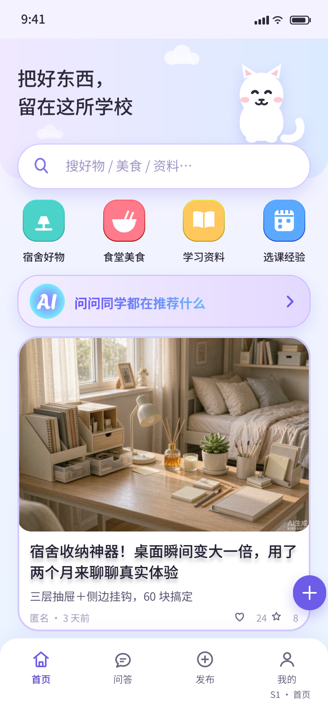
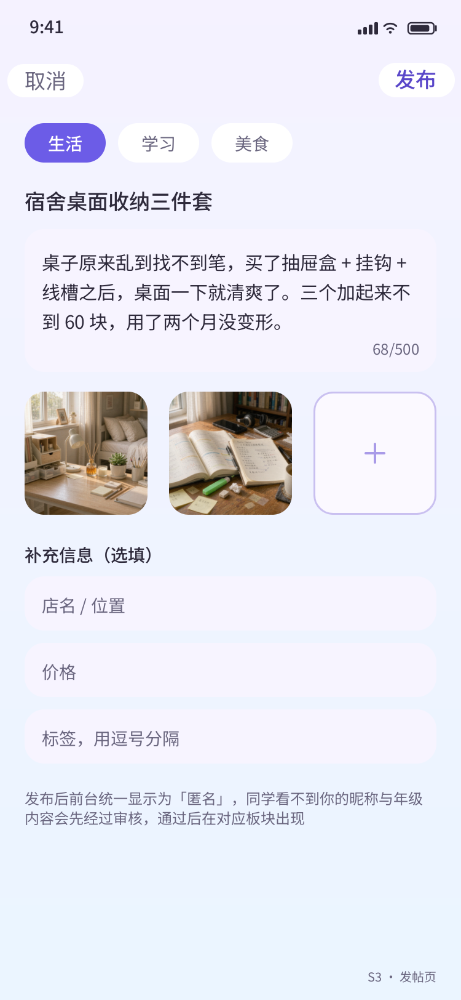
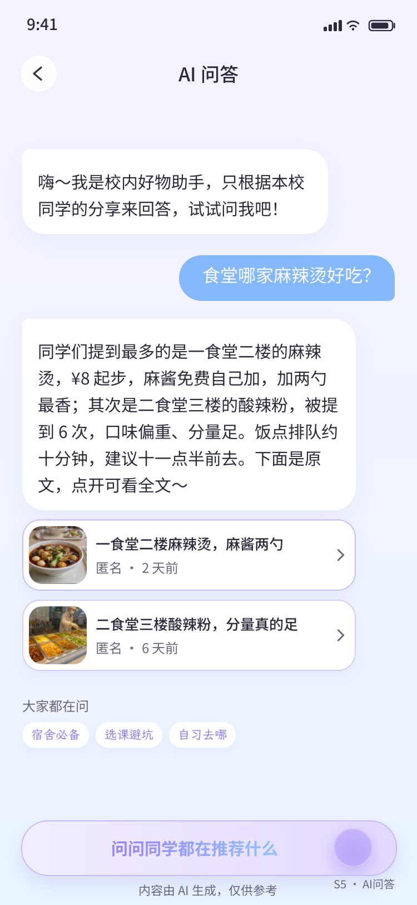
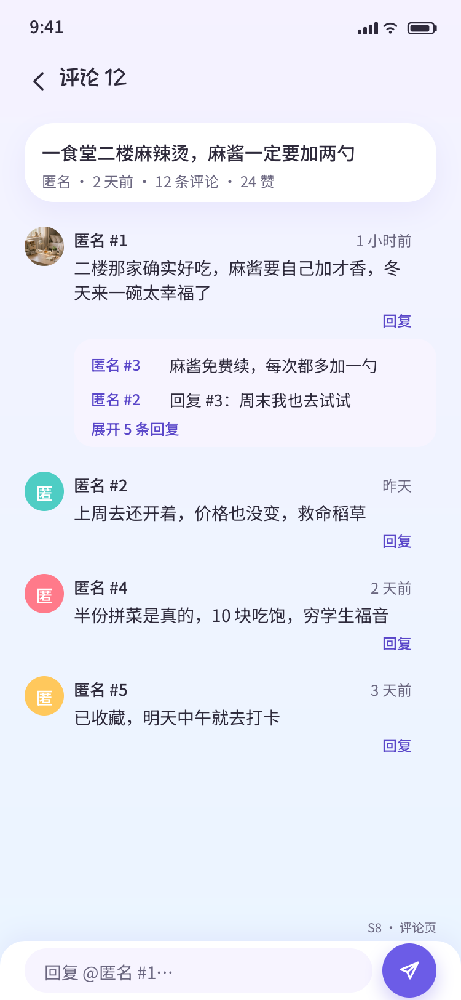

「好物分享」校园分享小程序
作品介绍文档
把好东西，留在这所学校
面向高校学生的匿名好物分享社区 · 站内 AI 问答 · 三层内容安全
「好物分享」是一款面向高校学生的匿名好物分享社区微信小程序。同学们把宿舍好物、食堂美食、学习资料、选课经验等真实使用体验发到站内，以「匿名」身份交流——不是陌生社交平台上的广告与滤镜，而是本校同学之间「就近、可信、可追问」的生活情报站。
产品覆盖三大内容板块（生活 / 学习 / 美食），由 9 个核心页面与 5 个辅助页构成完整闭环：
| 页面 | 说明 |
|---|---|
| S1 首页 | 渐变页头 + 胶囊搜索 + 分类贴纸 + AI 引导卡 + 信息流 |
| S2 板块页 | 三大板块内容流，支持"可能已过期"降权角标 |
| S3 发帖页 | 图文/视频发布 + 结构化补充字段（店铺/价格/标签） |
| S4 详情页 | 轮播媒体、点赞收藏、评论回复、举报、删除 |
| S5 AI 问答 | 基于站内内容的 RAG 问答，回答强制附带引用帖卡 |
| S6 我的 | 个人主页、我的分享/收藏、邀请码绑定 |
| S7 审核台 | 管理员待审队列、举报处理、通过/驳回 |
| S8 评论页 | 一级评论 + 楼层化二级回复（匿名 #楼层号） |
| S9 站内消息 | 评论/点赞/收藏/审核结果通知，分 Tab 未读计数 |
学生用户的核心使用流程只有四步：
第一步，进入即用。扫码打开小程序，系统通过 OPENID 无感登录并初始化账号，无需任何注册、授权打扰。
第二步，逛与搜。首页信息流按时间浏览，或按分类贴纸进入板块，也可用关键词搜索「好物 / 美食 / 资料」。
第三步，发布分享。点击「发一条」，选择板块、写标题与正文、配图或视频，可补充店铺/价格/标签等结构化信息；内容经三层安全过滤与审核后公开，前台统一显示为「匿名」。
第四步，问 AI。在 AI 问答页输入「食堂哪家麻辣烫好吃」这类问题，AI 只基于本校同学的真实分享作答，并附上来源帖卡，点开可看原文、可评论、可去打卡。
此外，管理员可通过审核台处理待审内容与用户举报；作者可在「我的分享」中查看自己帖子的被引用次数；收藏、点赞、评论、审核结果均会推送站内消息。一句话概括：让每一届同学攒下的生活经验，变成下一届同学随问随答的校内百科。
1. 「只答站内」的 AI 问答，绝不裸答。AI 回答必须携带至少 1 条站内引用帖卡，引用关系会回写到被引用帖子的引用计数，仅作者可见——AI 不只是玩具，而是给优质分享带来曝光的流量入口；站内没有相关内容时，AI 不调用大模型、不编造答案，直接引导用户发帖补位，省成本且根除幻觉。
2. 三层内容安全过滤 + 人工复审闭环。所有用户产出内容先过本地敏感词库，再过微信官方内容安全接口（文本 msgSecCheck / 图片 imgSecCheck），再由 AI 粗分辅助审核排序，可疑内容保守进入待审池由管理员人工裁决；配套举报、降权（"可能已过期"角标）等柔性治理手段，不靠一删了之。
3. 彻底的匿名社区设计。前台唯一身份是「匿名」，评论区以「匿名 #楼层号」区分对话层级；无感登录让用户零授权、零打扰进入；头像色块由系统生成——把身份感降到最低，把内容本身推到最前。
4. 「软萌手账」原创视觉系统。9 屏高保真设计稿全部令牌化落地：主色 #6C5CE7、板块三色（薄荷/天蓝/珊瑚）、统一渐变底、48rpx 白卡圆角、站酷快乐体标题字以 base64 内嵌实现零网络加载——视觉不是贴图拼凑，而是有完整 Design Token 体系的工程化设计。
5. 工程级可靠性细节。全部写操作携带 clientReqId 幂等键并由唯一索引兜底；楼层号用数据库事务自增防跳号；计数采用"读旧值 + 绝对值写回"防连点负数；云函数按 lib 分层（db/resp/auth/rate/msg 等）保证 26 个函数架构一致；乐观更新 + 本地补丁机制让点赞收藏在详情页与各列表页零延迟同步。
本项目在「AI 功能落地」与「AI 辅助开发测试」两条线上都有实质落地。
面向用户的 AI 功能。AI 问答（askQuery 云函数）为完整 RAG 链路：①频控（10 次/天/人 + 全局日预算）→ ②msgSecCheck 审提问 → ③问题检索（2-gram 命中计数与向量余弦检索双路，topK=5，score<0.35 过滤）→ ④无候选不调模型、返回引导 → ⑤拼 Prompt（仅允许引用候选内容，输出 answer 与 citeIds）→ ⑥引用合法性校验（citeIds 必须属于候选集，为空则降级为模板化拼接）→ ⑦落问答日志 → ⑧被引用帖计数异步累加。此外还有 AI 辅助内容审核（对待审内容粗分类打标，帮助审核台按风险排序）、AI 摘要生成（作为检索候选与降级拼接素材）。模型侧基于腾讯混元大模型（hunyuan-exp / hy3-preview，经 wx-server-sdk 4.x 的 cloud.ai() 免密钥调用），AI 回答目标 P90 < 5 秒，实测单次完整问答链路约 2.1 秒返回带引用回答。
AI 辅助开发与测试。本项目由两名学生开发者与 AI 智能体协同完成，AI 深度参与了需求转译、代码实现、真机问题定位与修复的全流程：真机截图/录屏反馈 → AI 分析云函数日志（CLS 日志检索）定位根因 → 修复 → 部署 → 云端实测验证，累计闭环处理 24+ 个真实缺陷（如云函数版本漂移、SDK API 误用、键盘遮挡、状态同步等），全部有日志实锤与回归验证；关键链路（登录、发帖、审核、AI 问答、互动计数）的幂等、频控、降级三重防护均在真机回归中逐项验证，AI 问答的"无候选不调模型""引用必须属于候选"等硬约束经实测确认生效。
前端：微信原生小程序（WXML/WXSS/JS），自研组件体系（post-card、nav-bar、page-state、chat-bubble、ai-disclaimer 等），四态页面规范（loading/success/empty/error）、键盘悬浮与安全区适配、字体 base64 内嵌（wx.loadFontFace Data URL 方案，绕开 CORS 限制零网络加载）。
后端：腾讯云开发 CloudBase——云数据库 NoSQL（17 个集合）、26 个云函数（统一 lib 分层：db / resp / auth / rate / msg / mediahelper / config / lex / hot / embed / llm / wxapi）、云存储。数据库权限一律"所有用户不可读写"，读写全部经云函数鉴权。
数据一致性：clientReqId 幂等键 + 唯一索引防重复提交；数据库事务保证楼层号自增与计数变更的原子性；"读旧值 + 绝对值写回 + max(0)"的计数策略防连点产生负数。
内容安全：本地敏感词库（覆盖中文/繁体/拼音/谐音变体）→ 微信官方内容安全接口 → AI 粗分 → 人工复审的四段流水线；审核通过前内容对他人不可见。
AI 工程：RAG 检索问答、引用校验与降级、频控与全局预算、问答日志埋点、向量化定时任务。
工程化协作：Git 分支协作（功能分支 → 合并 master → 环境配置隔离）、云函数本地化部署链路、CLS 日志观测、隐私协议版本化管理（onNeedPrivacyAuthorization 官方隐私授权钩子）。
体验工程：点赞/收藏的乐观更新 + 本地补丁同步（详情页与列表页零延迟一致）、轮播高度按图片比例自适应、错误态保守降级（异常内容进待审不拒稿）。
以下为项目 9 屏高保真设计稿与界面（「软萌手账」视觉体系，主色 #6C5CE7）：




其余页面（板块页 S2、详情页 S4、我的 S6、审核台 S7、站内消息 S9）设计稿见随附源码包 design-spec/images/ 目录。
本项目为首次参赛的新作品：截至目前未在其他任何比赛、期刊或公开渠道发表过，也未获得过任何奖项。项目正处于 MVP 完成后的真机回归与打磨阶段。
本项目为原创开发，未基于任何其他项目、开源模板或现成产品优化而来。项目使用了微信小程序官方框架与腾讯云开发（CloudBase）平台的官方 SDK 及基础云能力（云数据库、云函数、云存储、内容安全接口、混元大模型调用），并严格遵守其规范（如隐私授权钩子、内容安全要求）；在此平台能力之上，全部产品定义、视觉设计（9 屏高保真稿与设计令牌体系）、业务逻辑（匿名社区规则、三层内容安全、AI 问答链路与引用机制）与工程实现（26 个云函数及其分层架构、17 个数据集合、前端组件体系）均由团队独立设计与开发。